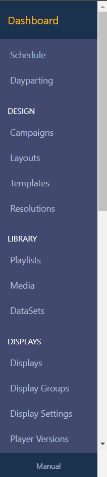
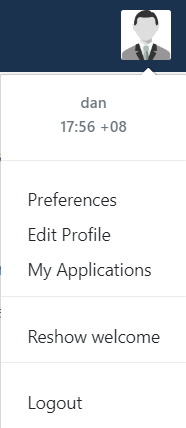

Navigation
Getting around the CMS is easy, with the intuitive side bar that shows only the items each user has permission to see.

The side bar is split into sections to further classify each page - these are:
-
Dashboard
The dashboard section is actually a direct link to the logged in users dashboard.
-
Schedule
The schedule section is actually a direct link to the calendar of events for each display in the signage network.
-
Design
The design section contains all the pages for Layout design and Campaigns.
-
Library
The library section contains all the stored media, including DataSets.
-
Displays
The display section contains all the pages for managing connected Displays, sorting Displays into Groups and viewing statistics.
-
Administration
The administration section contains all the pages for managing Users, User Groups, Modules and Global Settings.
-
Reporting
View Display statistics, Proof of Play as well as Library Usage by User/User Group Reports.
-
Advanced
The advanced section is for troubleshooting.
These options are enabled based on the user permissions for the logged in user. Permissions can be granted on a user by user or user group basis.
Profile Icon
In the top right hand corner of the CMS is the profile icon. This provides access to user specific data and options.

All new users should visit this menu to change their password the first time they log into the CMS